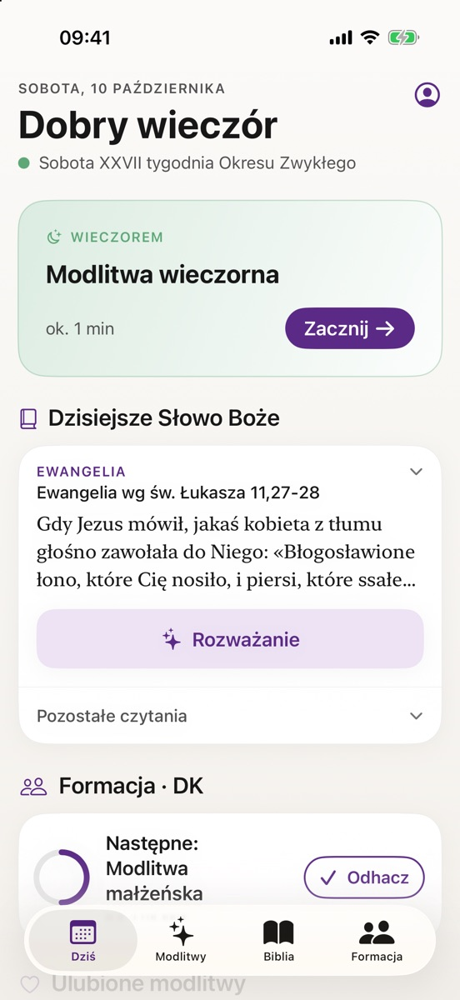
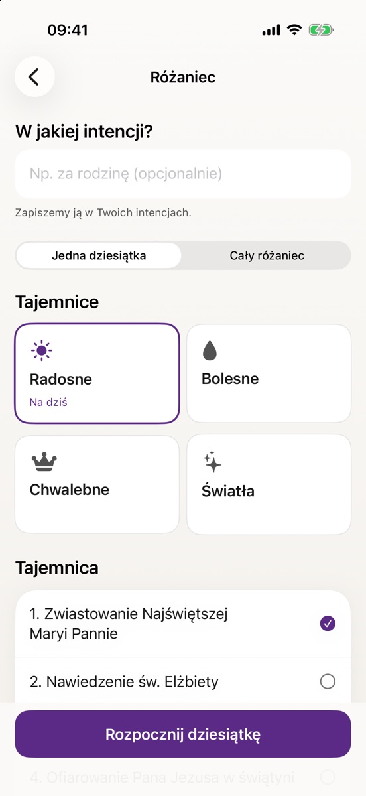
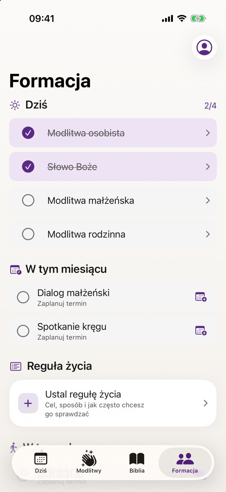

Codzienny towarzysz modlitwy
Słowo Boże na dziś, modlitwa rano i wieczorem, różaniec, nowenny i formacja we wspólnocie – w jednej spokojnej aplikacji.
Wkrótce na iPhone’a i Androida



Co znajdziesz w aplikacji
Dziś
Rano modlitwa poranna, w dzień Ewangelia, wieczorem modlitwa wieczorna. Do tego święty dnia i kolor liturgiczny.
Słowo Boże na dziś
Czytania mszalne i rozważanie Ewangelii, także bez internetu.
Różaniec i koronka
Tryb skupienia na pełnym ekranie: paciorki, licznik i rozważanie każdej tajemnicy. Jedna dziesiątka dziennie albo cały różaniec.
Nowenny
Teksty na każdy dzień, postęp i przypomnienia. Aplikacja podpowiada nowenny, które zaczynają się w najbliższych dniach.
Formacja
Zobowiązania Domowego Kościoła i Equipes Notre-Dame, reguła życia i terminy spotkań kręgu. Moduł jest opcjonalny.
Pismo Święte
Cała Biblia offline, przejście do fragmentu po sigli (np. „J 3,16”), zaznaczenia, notatki i lectio divina.
Prosto i z szacunkiem dla Ciebie
- Twoje intencje zostają w telefonieIntencje, notatki i postępy nie trafiają na nasz serwer. Nie ma konta ani logowania.
- Bez reklam i opłatAplikacja jest bezpłatna i nie wyświetla reklam.
- Dla każdego, nie tylko dla wspólnotFormacja jest dodatkiem. Bez niej aplikacja pomaga w zwykłej codziennej modlitwie.
Kontakt
Masz pytanie, pomysł albo chcesz zgłosić błąd? Napisz do nas.
mojamodlitwa.app@gmail.com